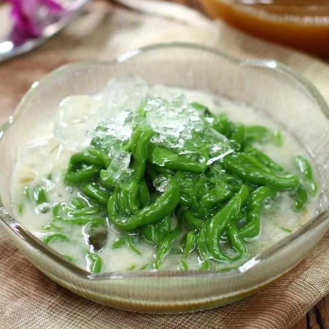

ลอดช่อง

ส่วนผสม
⋆ แป้งข้าวเจ้า 1/2 ถ้วย
⋆ แป้งมันสำปะหลัง 1/4 ถ้วย
⋆ แป้งท้าวยามม่อน 1 ชอนโต๊ะ
⋆ น้ำปูนใส 5/2 ถ้วย
⋆ ใบเตย 2 ถ้วย
⋆ กะทิ 250 มิลลิลิตร
⋆ น้ำตาลปี๊ป 150 กรัม
⋆ ดอกเกลือ 1/4 ช้อนชา
วิธีทำ
1) เทกะทิใส่หม้อ ใส่น้ำตาลปี๊ป ดอกเกลือ ตั้งเตาไฟกลางพอเดือด
คนให้เข้ากันลดไฟให้อ่อน เคี่ยว10นาทีและใส่ควันเทียนอบไว้30นาที
2) น้ำใบเตยใส่โถปั่นพร้อมน้ำปูนใส ปั่นจนใบเตยละเอียดแล้วพักไว้
3) เทแป้งทั้ง3ชนิดลงในกระทะ ผสมให้เข้ากัน เทน้ำใบเตยโดยกรองก่อนลงในกระทะ
คนให้เข้ากัน ตั้งเตาไฟอ่อนคนอย่างสม่ำเสมอ จนแป้งจับตัวเหนียวและสุกใส
4) เทแป้งที่ได้ใส่พิมตลอดช่อง กดแป้งลอดช่องเป็นช่วงๆ
โดยให้เป็นสายหล่นลงในน้ำเย็นจัด ทำเช่นนี้จนหมด